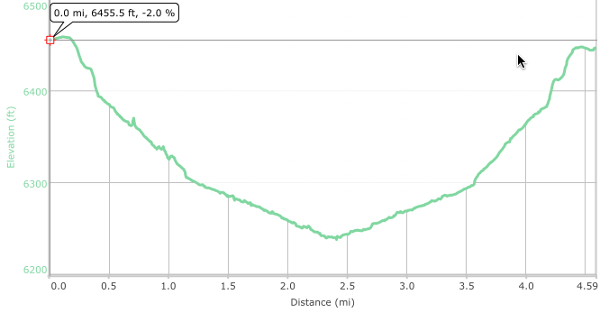
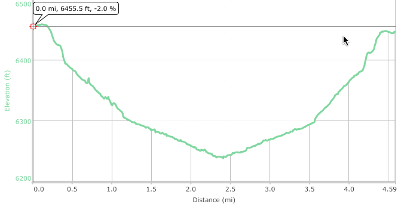

Hike New Mexico
w/ Tom & Ken
De Na Zin
| Difficulty | Round-trip | Type | Elev. Chg. | Exposure | Wow Factor | Facilities | Seasons | By Car |
|---|---|---|---|---|---|---|---|---|
| Easy | 4.7 miles | Out-and-back | 200 ft | Full sun | Badlands | None | Spring, Fall |
 |


 
- Oct 27, 2016: DeNaRocks
- Oct 27, 2016: Petrified wood abounds along the trail
- Oct 27, 2016: Crooks and crannies everywhere
- Oct 27, 2016: Multi-colored ice cream scoops
- May 28, 2011: Dark-capped hoodoos along the wash
- Oct 27, 2016: Hoodoos in the sky
- May 28, 2011: More hoodoos top the hills
- Oct 27, 2016: Winding into the canyon
- Oct 27, 2016: The trail descends the bluffs
- Oct 27, 2016: The wash widens and view expand
- https://www.flickr.com/photos/139088815@N08/30641359175/in/album-72157674420137292
- https://www.flickr.com/photos/139088815@N08/30341616680/in/album-72157674420137292
- https://www.flickr.com/photos/139088815@N08/30341642100/in/album-72157674420137292
- https://www.flickr.com/photos/139088815@N08/30605251616/in/album-72157674420137292
- https://www.flickr.com/photos/139088815@N08/30605291336/in/album-72157674420137292
- https://www.flickr.com/photos/139088815@N08/30341791760/in/album-72157674420137292
- https://www.flickr.com/photos/139088815@N08/30605159766/in/album-72157674420137292
- https://www.flickr.com/photos/139088815@N08/30524617122/in/album-72157674420137292
- https://www.flickr.com/photos/139088815@N08/30524669582/in/album-72157674420137292
- https://www.flickr.com/photos/139088815@N08/30553700921/in/album-72157674420137292
This vast badlands is a part of the BLM "Bisti/De Na Zin Wilderness Area",
and De Na Zin forms the eastern part of the block. It is reached from US550 on CR7500 -
also seen as Is7023 (Indian Service Road) on some maps. From US550, take the gravel road
straight for 11.1 miles to a marked parking area on the north side of the road.
There is no trail in the De Na Zin, although a trail segment leads from the parking
area down into the canyon - a rather small elevation level change, with an easy descent.
From there, follow the wash west as it descends and eventually merges with the larger
De Na Zin wash. All along the wash, petrified wood is strewn along and in the banks,
ranging from large logs and trunks to smaller broken pieces. As if that were not enough,
wildly colorful hills and banks proliferate, with hoodoos appearing now and then, both
high and low. The wash can be followed for an indeterminate length, with the opportunity
to explore side canyons and arroyos flowing in. This area is hard to describe given
the variety of topological features, and the hike can lead you almost anywhere!